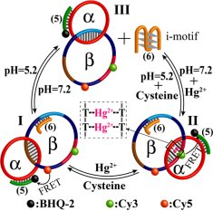

Background information
What is DNA catenane?
Catenane is a mechanically-interlocked molecular architecture consisting of two or more interlocked macro-cycles. The unique mechanic bonds provide catenanes with special traits when it comes to explore their properties. The approaches of synthesizing them also yield new ideas to chemists.
DNA has been commonly known as the molecule unit to assemble catenanes, called DNA catenanes, since decades ago. It was first learned as a common cellular feature.1 It is well-known that catenanes are the intermediates in the terminal stage of replication of circular DNA2, such as plasmid. Perhaps the most striking example of catenation is found in kinetoplasts where DNA is a network of thousands of linked rings. 3 DNA catenanes in nature were of large molecular weight and complex topological structure, which endowed controllable and valuable functions in biological activities.
With the rapid development of DNA nanotechnology, artificial fabrication of DNA catenanes has attracted more and more attention in this field. Compared with natural DNA catenanes, artificial DNA catenanes are smaller and topologically simpler. Generally single-stranded (ss) DNA, whose length is always less than 150 nt, was used to fabricate the nanostructures. Using elaborate design, people could make two or three ring catenanes with ssDNA which are controllable to participate in various activities on nano-scale, such as molecular motors. Examples like catenane rotary motor with controlled directionality 4 and oscillator controlled by pH 5 have been reported in the past few years. Meanwhile, studies on the topological state of artificial DNA catenanes e.g. secondary structure 6 also provide new insight into DNA basic research.
What can DNA catenanes do?
With its unique properties, DNA catenanes can bring new ideas to DNA-related disciplines, like DNA nanotechnology. The following examples are going to give you a brief view on what have been achieved in the field of DNA catenanes.
Conduct selection of DNAzyme
DNAzymes, a specific category of DNA molecules which could perform catalytic ability, were known by us decades ago. However, most known deoxyribozymes are significantly less efficient than protein enzymes. Concluding from ribozyme, people speculate that this inefficiency is due to its diminutive size and structural simplicity. Topologically linked ssDNA rings (DNA catenanes) can offer more complex structures than linear DNA molecules, and researchers have used linked-ring DNA libraries to conduct in vitro selection which could lead to the isolation of catalytic DNAs with new or improved functions.7
Controllable nano-motors
The mechanic connection makes nano-motors based on DNA catenanes different from other motors. Catenane motors are good at changing between different states4-5, placing ‘cargos’ in accurate position8. Meanwhile, various fuels/antifuels could be used to trigger those machines i.e. DNA strands4-5, 8, Hg2+/cysteine4, H+/OH−4-5. It is reasonable to believe that more and more intriguing and complex motors will be made in the future.

Figure 1 A Three-Station DNA Catenane Rotary Motor[2].
Achieve intricate functions within a single molecular structure
Making use of relative motion between DNA rings of DNA catenane, people now could enable two or more independent functions to achieve within one molecule, such as DNA hybridization and Rolling circle amplification (RCA), or aptamer binding and RCA. These DNA catenanes can also be used to deliver two cooperative functions, such as DNA binding-triggered signal amplification. Such 2-in-1 functions are difficult to achieve simply with a linear ssDNA molecule, particularly when one of the functions is the signal amplification.9
Our purpose
Currently, most of the reported catenanes are two-ring and few papers focus on the preparation of catenanes containing more than two rings. Meanwhile, most building methods were with low yield. Inspired by Y-shaped DNA, we are going to build a triad-ring structure (DNA triad for short) in this summer, and infuse new blood to DNA nanotechnology. Unlike famous Borromean rings, if one ring is broken, the left two rings (of DNA triad) will still remain attached. Meanwhile, we hope to fabricate a more complex structure - Olympic Rings using the strategy of making triad rings. Our molecules and ideas could provide scientists with inspiration to develop DNA nanotechnology. Specified purposes are listed as follow:
1. Build triad-ring ssDNA catenane structures based on Y-shaped DNA and improve its yield.
2. Fabricate a more complex structure: ssDNA Olympic Rings using the strategy of making triad rings.
3. Determine topology structures of the catenanes we made, and explore further application of them.
 © 2014 BIOMOD-OUC-2014 designed by: 伪技术の宅
© 2014 BIOMOD-OUC-2014 designed by: 伪技术の宅